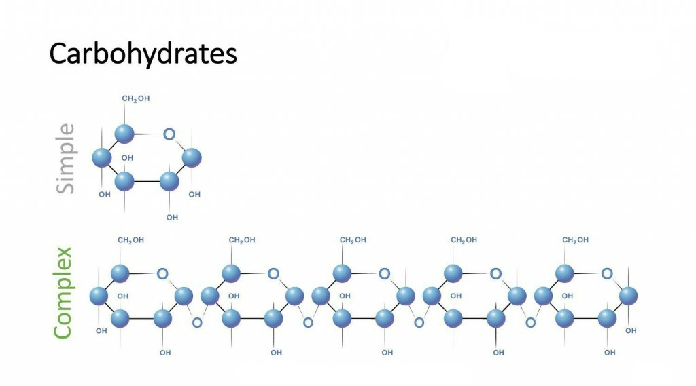
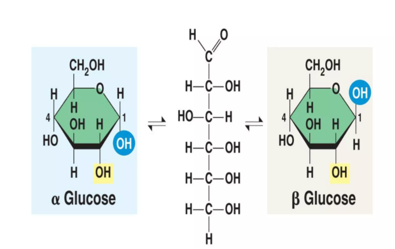
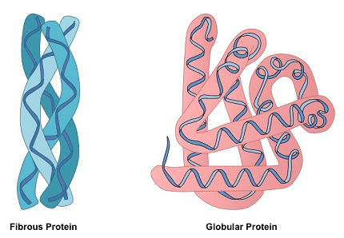
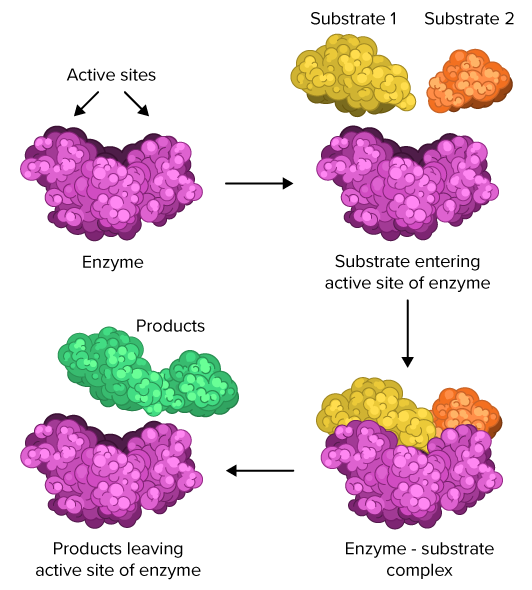
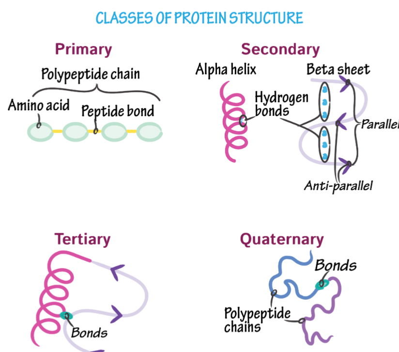

Chemical molecules that are found in living cells and are essential for all biological activities of life (such as obtaining energy, growth, repair, heredity, etc.) are called biomolecules.
The main biomolecules and their examples are as follows—
- Carbohydrate
- Glucose
- Sucrose
- Starch
- Protein
- Hemoglobin
- Enzyme
- Keratin
- Fat (Lipid)
- Ghee
- Oil
- Fatty acid
- Nucleic acid
- DNA
- RNA
Carbohydrates are polyhydroxy aldehydes or ketones, or compounds that yield these on hydrolysis. They are the main source of energy in organisms. General formula: C n (H₂O) n

Types of carbohydrates
- Monosaccharides - the simplest carbohydrates that cannot be hydrolyzed further.
Examples: glucose, fructose and galactose.
- Disaccharides - carbohydrates in which 2 monosaccharide units are joined together are called disaccharides. They have a sweet taste and are soluble in water.
Examples:
Sucrose, maltose, lactose
- Oligosaccharides - carbohydrates in which 3 to 10 monosaccharide units are joined together are called oligosaccharides. They have a sweet taste and are soluble in water.
Example: raffinose
- Polysaccharides - carbohydrates in which hundreds to thousands of monosaccharide units are joined together are called polysaccharides.
These are generally insoluble and tasteless. Their function is to store energy and provide structural support.
Examples: starch, glycogen, cellulose
Classification of carbohydrates:
Type | Description | Examples |
Monosaccharide | Simple sugar, single unit | Glucose, fructose, galactose |
Disaccharide | Two monosaccharides joined by a glycosidic bond | Sucrose, lactose, maltose |
Oligosaccharide | 3–10 monosaccharide units | Raffinose |
Polysaccharide | Long-chain sugars | Starch, glycogen, cellulose |
The products obtained from the hydrolysis of lactose, maltose and sucrose are as follows.
- Lactose → glucose + galactose
- Maltose → glucose + glucose
- Sucrose → glucose + fructose
The main unit of carbohydrate that provides energy to living organisms is glucose (C₆H₁₂O₆).
During cellular respiration, glucose is oxidized to produce carbon dioxide, water and energy (ATP).
C₆H₁₂O₆ + 6O2 → 6CO2 + 6H2O + ATP

The two final products of respiration in cells are:
- Carbon dioxide (CO2)
- Water (H2O)
Besides this, energy is also produced in the form of ATP.
ATP (adenosine triphosphate) is called the energy currency of the cell.
It forms ADP (adenosine diphosphate) and Pi (inorganic phosphate), releasing energy.
ATP → ADP + Pi + energy
In this way it provides immediate energy to living cells.
Carbohydrates have the following functions in living organisms.
- Glucose provides energy through respiration.
- Glycogen is the energy store in animals.
- Carbohydrates prevent proteins from being used as an energy source.
- Ribose and deoxyribose are parts of RNA and DNA.
Carbohydrates have the following functions in plants.
- It is stored in plants in the form of starch and functions as a food reserve.
- Cellulose, which is a polysaccharide, is the structural component of the plant cell wall.
- Mouth: Salivary amylase breaks down starch into maltose.
- Small intestine: Pancreatic amylase further breaks down starch into maltose.
- Brush border enzymes: Maltase, lactase and sucrase convert disaccharides into monosaccharides (glucose, fructose, galactose).
- Absorption: Monosaccharides are absorbed from the intestinal wall into the blood and reach the cells, providing energy.
Amino acids are organic compounds in which both an amino group (–NH₂) and a carboxyl group (–COOH) are present in the same molecule. They are the basic units of protein.
Examples:
- Glycine
- Alanine

Essential amino acids: Amino acids that are not synthesized in the human body and must be obtained from food.
Examples: valine, leucine, lysine, tryptophan.
Non-essential amino acids: Amino acids that are synthesized in the human body.
Examples: glycine, alanine, aspartic acid, glutamic acid
When the acidic group (-COOH) of an amino acid gives up a hydrogen ion (H+) and the basic group (–NH₂) accepts that same ion, a dipolar ion is formed which is called a zwitterion.
- Amide bond: When the –COOH group of a carboxylic acid reacts with an amine (–NH₂) group and water (H₂O) is released, the –CONH– bond formed between them is called an amide bond.
R–COOH+R′–NH₂⟶ R–CONH–R′+H₂O
- Peptide bond: When the –COOH group of one amino acid reacts with the –NH₂ group of another amino acid and water (H₂O) is released, the –CONH– bond formed between them is called a peptide bond.
This bond plays a fundamental role in the formation of proteins.
Proteins are high molecular weight, nitrogen-containing biological compounds formed by the condensation of many amino acids through peptide bonds. They are essential components of living cells and perform structural and functional roles.
Examples: hemoglobin, keratin, insulin, collagen.
Proteins are mainly divided into two types based on their shape and structure —
- Fibrous proteins: Their structure is long and fiber-like. They are insoluble in water. Their main function is to provide structural support.
Examples—
Keratin (in hair, nails)
Collagen (in bones and ligaments)
Myosin (in muscles) - Globular proteins - Their structure is spherical or oval. They are soluble in water. Their main function is to regulate and control biochemical reactions.
Examples—
Hemoglobin (oxygen transport)
Insulin (blood sugar regulation)
Enzymes (biocatalysts)
Fibrous protein | Globular protein |
Long thread-like structure | Spherical structure |
Insoluble in water | Soluble in water |
Provide structural and mechanical support | Functional roles such as enzymes, hormones, transport |
Examples: keratin, collagen | Examples: hemoglobin, insulin |
The two diseases caused by protein deficiency are as follows.
- Kwashiorkor
- Marasmus
- Hemoglobin – transports oxygen in the blood.
- Insulin – regulates blood sugar levels.
- Keratin – structural protein of hair, nails and skin.
- Collagen – provides strength to connective tissues.
Hemoglobin is a red-colored protein found in red blood cells (RBC) and contains iron. It functions to carry oxygen from the lungs to the tissues and carbon dioxide from the tissues to the lungs.

Functions:
- Carrying oxygen from the lungs to the tissues.
- Carrying carbon dioxide from the tissues to the lungs.
- Helping maintain the pH balance of the blood.
When hemoglobin present in the blood combines with oxygen from the lungs, the temporary compound formed is called oxyhemoglobin.
Hb (deoxyhemoglobin)+O2 ⇌ HbO₂ (oxyhemoglobin)

Hemoglobin deficiency causes anemia, due to which fatigue, weakness and a pale complexion occur.
Enzymes are biological catalysts that increase the rate of chemical reactions occurring in living cells, while remaining unchanged themselves.
Most enzymes are proteins, and they play an important role in processes such as digestion, respiration and metabolism.

Enzymes are biocatalysts made of protein, which greatly increase the rate of biochemical reactions and do not undergo permanent change themselves.
Industrial uses of enzymes:
- In the textile industry – amylase is used to remove starch from fabrics.
- In the food industry – invertase is used to soften toffee, protease to tenderize meat.
- In the dairy industry – rennin is used to make cheese.
- In the liquor industry – zymase is used to convert sugar into alcohol.
Proteins are made up of long chains of amino acids joined by peptide bonds. The structure of protein is understood at four levels:
- Primary structure - This is the straight chain of amino acids. It tells which amino acid is joined in which order. This structure determines the properties and function of the protein.
- Secondary structure - The amino acid chain arranges itself by folding or coiling due to hydrogen bonds.
Main types:
α-helix
β-pleated sheet
This makes the protein stable. - Tertiary structure - The entire chain of the protein takes on a 3-dimensional form. This includes hydrogen bonds, ionic bonds, hydrophobic interactions and disulfide bonds. This is the active structure of the protein.
- Quaternary structure - When more than one polypeptide chain combine to form a functional protein, it is called the quaternary structure.
Example: hemoglobin (which has 4 polypeptide chains).

The stability of the α-helix structure of protein comes from intramolecular hydrogen bonds, which form between the >C=O group of one amino acid and the –NH group of the fourth amino acid in the chain.
The four main sources of protein are as follows —
- Milk and dairy products – milk, curd, cheese/paneer, buttermilk
- Pulses and cereals – mung bean, lentils, chickpea, kidney beans, soybean
- Non-vegetarian foods – fish, egg, meat
- Nuts and seeds – peanuts, almonds, walnuts, pumpkin seeds
The importance of protein is as follows.
- Structural component of cells and tissues.
- Enzymes, which control all biochemical reactions.
- Hormonal function (e.g. insulin).
- Transport of molecules (e.g. transport of oxygen by hemoglobin).
- Defense function (e.g. antibodies).
When the natural structure of a protein is destroyed under the effect of heat, strong acid/base or chemical reagents, and its biological activity is lost, this process is called denaturation of protein.

α-amino acid | Protein |
Simple molecule, in which the amino and carboxyl groups are attached to the same carbon. | Large molecule made of many amino acids joined by peptide bonds. |
Low molecular weight. | High molecular weight. |
Examples: glycine, alanine. | Examples: hemoglobin, insulin. |
Nucleotides are the structural and functional units of nucleic acids.

Each nucleotide is made up of three components —
Phosphate group—
- Phosphoric acid (in DNA)
- Orthophosphate group (in RNA)
Pentose sugar
- Deoxyribose (in DNA)
- Ribose (in RNA)
Nitrogenous base
- Purine (Adenine, Guanine)
- Pyrimidine (Cytosine, Thymine – in DNA, Uracil – in RNA)
Nucleic acids are complex biomolecules made up of nucleotides, hence they are also called polynucleotides. They store and transfer genetic information in organisms.
There are two types – DNA and RNA
Functions:
- Storage and transfer of genetic information (in DNA)
- Protein synthesis (in RNA)
It is a double helix nucleic acid. It is the genetic material in all organisms. It is called the blueprint of life.
The full form of DNA is deoxyribonucleic acid.

Chemical composition of DNA
- Phosphoric acid
- Deoxyribose sugar
- Nitrogenous bases (A, G, C, T)
Functions of DNA
- It transfers traits from generation to generation.
- It stores the information for protein synthesis in the form of a code.
It is a single-stranded nucleic acid. It carries out protein synthesis in all eukaryotes.
Full form of RNA – ribonucleic acid

Chemical composition of RNA
- Orthophosphate group
- Ribose sugar
- Nitrogenous bases (A, G, C, U)
The main function of RNA — protein synthesis in organisms.
| DNA | RNA |
|---|---|
| The full form of DNA is deoxyribonucleic acid. | The full form of RNA is ribonucleic acid. |
| It contains deoxyribose sugar. | It contains ribose sugar. |
| It contains the nitrogenous base thymine (T). | In place of thymine, it contains uracil (U). |
| DNA is generally double-helical and double-stranded. | RNA is generally single-stranded. |
| It mainly functions in the storage and transmission of genetic information. | It mainly plays an important role in protein synthesis. |
| It is mainly found in the nucleus. | It is found in both the nucleus and the cytoplasm. |
DNA fingerprinting is a technique by which a person's identity is determined based on the specific pattern of their DNA sequence.

Importance:
- For identifying criminals in forensic science.
- In paternity testing.
- In identifying genetic diseases.
- In biodiversity studies and conservation.
Vitamins are organic compounds that are needed in very small amounts for the normal growth, proper functioning and disease prevention of the body. They do not provide energy but are necessary for metabolism.

The main roles of vitamins in the human body
- Vitamins help in the proper growth of the body, especially essential for the physical and mental growth of children.
- Vitamins increase the body's disease resistance, enabling us to fight diseases.
- They help in digesting food, absorbing it into the body and using it properly.
- Vitamins keep the skin, eyes, bones and teeth strong and healthy.
Vitamins are divided into two classes.
- Fat-soluble vitamins such as A/D/E/K
- Water-soluble vitamins such as B/C
Fat-soluble vitamins are stored in the liver and adipose tissue.
Vitamin A (retinol):
Source: carrot, milk, butter, fish oil.
Function -
- Maintains normal vision.
- Keeps the skin and mucous membranes healthy.
Deficiency disease - night blindness
Vitamin D (calciferol)
Source—the main source of vitamin D is sunlight, so the body keeps producing it regularly and there is less need to store it for long periods like food.
- Helps in the absorption of calcium and phosphorus.
- Strengthens bones and teeth.
Deficiency disease - rickets
Vitamin E (tocopherol)
Source:
- Functions as an antioxidant.
- Protects cell membranes from damage.
Deficiency disease - infertility
Vitamin K (phylloquinone)
Source: green leafy vegetables, cereals and pulses, oil; intestinal bacteria also synthesize a small amount of vitamin K.
- Helps in blood clotting.
- Prevents excessive bleeding.
Deficiency disease - failure of blood clotting
These are not stored in the body, so it is necessary to take them regularly.
Vitamin B Complex
| Type | Source | Function | Deficiency disease |
|---|---|---|---|
| B₁ (thiamine) | whole grains, peanuts, pulses, sprouted grains | maintaining the nervous system, breakdown of carbohydrates | beriberi |
| B₂ (riboflavin) | milk, egg, green vegetables, fish | energy production, health of skin and eyes | ariboflavinosis (swelling of the tongue and lips, irritation in the eyes) |
| B₃ (niacin) | meat, fish, peanuts, cereals | providing energy to cells | pellagra (skin disease, diarrhea, mental abnormality) |
| B₅ (pantothenic acid) | egg, milk, peas, sweet potato | formation of coenzyme A, metabolism of fat and protein | rare – fatigue, headache |
| B₆ (pyridoxine) | banana, milk, eggs, fish | metabolism of amino acids, formation of hemoglobin | anemia, irritability |
| B₇ (biotin) | egg yolk, soybean, peanuts, spinach | formation of fatty acids, energy metabolism | dermatitis, hair loss |
| B₉ (folic acid) | green leafy vegetables, orange, sprouted grains | formation of DNA and RNA, formation of red blood cells | megaloblastic anemia, neural tube defects in the fetus |
| B₁₂ (cobalamin) | milk, egg, meat, fish | formation of red blood cells, function of the nervous system | pernicious anemia |
Vitamin C (ascorbic acid):
It dissolves in the blood and is excreted with urine, and is not stored in the body, so it is necessary to take it daily from the diet.
Source: citrus fruits (orange, lemon), amla (Indian gooseberry), tomato, green leafy vegetables.
Function -
- Wound healing
- Increasing disease resistance
- Healthy gums
Deficiency disease - vitamin C deficiency causes scurvy, in which the gums bleed, teeth become loose and wounds do not heal quickly.
Vitamin A: necessary for normal vision, growth and healthy skin.
Source: carrot, milk, butter, fish oil.
Vitamin C: necessary for wound healing, increasing disease resistance and healthy gums.
Source: citrus fruits (orange, lemon), amla (Indian gooseberry), tomato, green leafy vegetables.
The four sources of vitamin A are as follows.
- Carrot
- Milk
- Butter
- Fish oil
Disease | Deficiency of which vitamin |
Failure of blood clotting | Vitamin K |
Night blindness | Vitamin A |
Anemia | Vitamin B₁₂ |
Rickets | Vitamin D |
(i) Vitamin A
- Maintains normal vision.
- Keeps the skin and mucous membranes healthy.
(ii) Vitamin D
- Helps in the absorption of calcium and phosphorus.
- Strengthens bones and teeth.
(iii) Vitamin E
- Functions as an antioxidant.
- Protects cell membranes from damage.
(iv) Vitamin K
- Helps in blood clotting.
- Prevents excessive bleeding.
Vitamin K is responsible for blood clot formation.
Vitamin C (ascorbic acid) is a water-soluble vitamin. Hence, it dissolves in the blood and is excreted with urine, and is not stored in the body, so it is necessary to take it daily from the diet.
The main source of vitamin D is sunlight, so the body keeps producing it regularly and there is less need to store it for long periods like food.
- The basic structural and functional unit of protein is:
- a) amino acid
- b) fatty acid
- c) nucleotide
- d) glucose
Answer: Amino acid
- The sugar present in RNA is:
- a) ribose
- b) deoxyribose
- c) glucose
- d) fructose
Answer: Ribose
- Which of the following is a disaccharide?
- a) glucose
- b) maltose
- c) fructose
- d) ribose
Answer: Maltose
- Enzymes are chemically:
- a) lipid
- b) protein
- c) carbohydrate
- d) vitamin
Answer: Protein
- Which of the following is a polysaccharide?
- a) sucrose
- b) lactose
- c) starch
- d) fructose
Answer: Starch
- The monomer units of nucleic acids are:
- a) insulin
- b) hemoglobin
- c) nucleotide
- d) glycogen
Answer: Nucleotide
- The bond between two amino acids is called:
- a) glycosidic bond
- b) peptide bond
- c) hydrogen bond
- d) phosphodiester bond
Answer: Peptide bond
- Which vitamin is water-soluble?
- a) vitamin A
- b) vitamin D
- c) vitamin B
- d) vitamin K
Answer: Vitamin B
- The carbohydrate known as fruit sugar is:
- a) glucose
- b) sucrose
- c) fructose
- d) lactose
Answer: Fructose
- The main structural polysaccharide in the plant cell wall is:
- a) cellulose
- b) glycogen
- c) starch
- d) pectin
Answer: Cellulose
- Which of the following is not a protein?
- a) insulin
- c) keratin
Answer: Glycogen
- DNA stands for
- a) deoxyribonucleic acid
- b) deoxyriboprotein acid
- c) dicarboxylic nucleic acid
- d) none of these
Answer: Deoxyribonucleic acid
- Which of the following gives a positive Fehling's test?
- c) maltose
- d) both a and c
Answer: Both a and c
- Which of the following is a reducing sugar?
- d) cellulose
Answer: Glucose
- Which protein is found in hair and nails?
- a) albumin
- b) collagen
- d) casein
Answer: Keratin
- The simplest carbohydrate is _______. (Glucose)
- Proteins are polymers of _______. (Amino acids)
- The sugar present in DNA is _______. (Deoxyribose)
- Fats are esters of fatty acids and _______. (Glycerol)
- The enzyme that converts starch into maltose is _______. (Amylase)
- Proteins are polymers of fatty acids. - False
- Cellulose is a polysaccharide. - True
- Vitamin D is a fat-soluble vitamin. - True
- RNA contains deoxyribose sugar. - False
- Enzymes speed up biochemical reactions. - True
| Column A | Column B |
|---|---|
| 1. DNA | e. genetic material |
| 2. Glucose | b. monosaccharide |
| 3. Maltose | c. disaccharide |
| 4. Starch | d. polysaccharide |
| 5. Enzyme | a. biological catalyst |